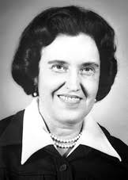
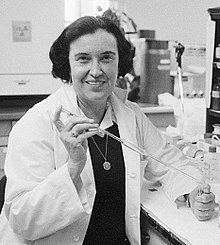

Biography
Rosalyn Sussman Yalow was born on July 19, 1921 in New York, New York. Rosalyn was born into a Jewish household. She went to Walton High School. After high school, she attended the all-female, tuition-free Hunter College , where her mother hoped she would learn to become a teacher. Instead of being a teacher, Rosalyn decided to study physics. Since she knew how to type she was able to get a part-time job as a secretary to Dr. Rudolf Schoenheimer, a leading biochemist atColumbia University's Collage of Physicians and Surgeons . She started to believe that any respectable graduate school would not admit and financially support a woman, so she took a different job as a secretary to Michael Heidelberger, who was another biochemist at Columbia. He said he would only hire her on one condition, she had to study stenography. She then graduated from Hunter College in January 1941.
A few years later, she received an offer to be a teaching assistant in physics at the University of Illinois at Urbana-Champaign . She received this offer partially because of World War ll had begun and many men went off to fight, and the University opted to offer women scholarship to avoid being shut down. She was also the first women since 1917. She earned her Ph.D and then the next summer took two tuition-free physic courses. She married one of her fellow students, Aaron Yalow. They had two children. Many people believed that Aaron was emasculated by Rosalyn, due to her successful career as a scientist. She taught many physics lectures from 1946 to 1950. In 1947 she began her association with the Veterans Administration by becoming a consultant to the Bronx VA Hospital. She equipped a radioisotope laboratory where she researched many topics.